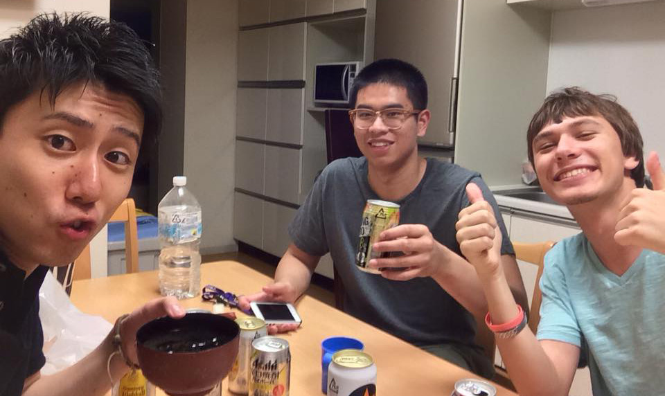

September 2nd, 2015
Alex
The morning began at 4:00 when I woke up to get ready for my first flight to Chicago. My parents drove me to the airport with my two suitcases and backpack to say their teary goodbyes. My flight took off at around 7 AM and I landed in Chicago at 9. Unfortunately for me, I had a 4 hour layover in Chicago O’Hare Airport with nothing to do so I laid around for a while until my flight to Tokyo at 1:30. Oddly enough, the flight was mostly empty but I sat next to a nice man from Indonesia who was a good conversation partner during the times I was awake. Twelve and a half hours later I landed in Narita airport on the 3rd to begin the final leg of my trip.
Mindy
With Alex beginning his trip to Japan before me and all of my friends starting college again, there really isn’t much to do around my hometown. Alex lent me his Gamecube so I’ve been practicing Fox in Super Smash Bros. Melee a lot. I’ve also had a lot of time to catch up on all my anime but I still feel pretty bored. Most of the day was spent rolled up on my mattress like a burrito playing on my laptop. That's okay though because smoothie-san and ramen-chan will always be there for me.
September 3rd, 2015
Alex
I landed in Narita airport in Tokyo at around 4 PM and began my trek towards my new home for these four months. Luckily for me a friend of mine from Northeastern is in my program so I met up with him and we got through customs together. We got out bags shortly afterwards so we could start heading out. Unfortunately getting a taxi to my dorm is very expensive so I had to take a bus and then transfer to the subway in Shinjuku. I exited Meidaimae station in Suginami-ku with my bags around 7 PM so I could start the 10 minute walk to my campus. I’m living in a small building named the “Izumi International House” and it’s filled with Meiji University students who are from other countries. It’s pretty close to the Izumi Campus of Meiji but it’s a little out of the way so I got a bit lost and it ended up taking me another hour to find it. My friend, Kevin, and I decided to quickly get some sushi at a nearby restaurant and promptly passed out. Twenty-seven hours of travel is not fun but Japan is worth the trouble.
Mindy
The day began as most of them do, with me waking up super late and lazing around for most of the day. I’ve been spending a lot of my time watching a playthrough of a new game called “Until Dawn” by the Youtuber, Markiplier. Unfortunately he's only gotten about half way through the game so I couldn't binge the entire playthrough. I also finally signed up for the CIEE health insurance so that was the extent of my productiveness for the day.

September 4th, 2015
Alex
I am free to do whatever I like until the 7th so Kevin and I decided to visit the nearby Shinjuku district for some shopping and wandering. Both of us had been to Meiji University last year for a shorter program so we knew a few Japanese students that we wanted to see. One of these students is Genichiro and he was a very close friend of ours. He lives near Shinjuku so we asked him to meet us there and he took us around the area to his favorite restaurant in Japan, a small hole-in-the-wall Chinese restaurant. Afterwards we went to do some exploring in the electronics shops before getting caught in the rain. Genichiro had to go to his job at a nearby cafe so we went back to Izumi to take a break before going out to a bar later that night with Genichiro and another friend of ours, Junki. We caught up with them over some drinks and went home late at night to end the day.
Mindy
I changed my haircut and got it cut super short again. The main reason was because a friend didn’t think I could pull off a guy's haircut. Ha! I also finally got my housing address and it doesn’t seem like it’s too far from Alex so I’m pretty excited about that.
September 5th, 2015
Alex
Kevin and I began the morning getting some cuttlefish at a local cafe and planning to visit Akihabara, the “geek” district of Japan. Akihabara is very well known for its anime and gaming culture but it’s also a great place to buy various kinds of electronics. For this reason, locals affectionately call it “Electric Town”. Nintendo amiibo are very high in demand across the world and I’ve been trying to buy some but they’re much too expensive in America. Luckily for me they’re very easy to find and I decided to buy a few before we went out to dinner. Last time I was in Japan I spent my time living in Jinbocho, a neighborhood well known for its various shops that sell old books. I decided to stop by to take a look around again and visit the nearby Meiji Surugadai campus that I used to take classes in. My favorite sushi bar, Standing Sushi, was open so I went in for some amazing sushi. A nice old Japanese man paid for my entire meal after we talked the whole time I was there. It felt a bit awkward for me because this man paid for my meal but the Japanese are always very polite so I know it was just a gesture of good faith towards a foreigner. I thanked him before going back to Izumi to meet up with two more Meiji friends, Tomohiro and Motoki. We caught up and talked for a few hours before they had to go home before the last trains of the night left.
Mindy
Didn’t really do much today. I watched a completed playthough of “Until Dawn” by the Youtuber, Pewdiepie for most of the day but I finally got my new laptop battery as well! My laptop has had a broken battery for a long time now but I finally caved and bought a new one because I hate being tethered to an outlet all the time. I rolled around the house all day alternating between Smash, League, and coding this blog before falling asleep.
September 6th, 2015
Alex
It was a very slow morning for me after being up so late so I resigned myself to my room for most of the day to relax and unwind. I had barely been in my dorm at all since I landed in Japan so I took the time to unpack and prep for the visa work I would have to do the next day. At around dinner time Kevin asked me to go out with him and some of his friends to get some Korean barbeque. I met some new Meiji students and got some amazing food before heading back to Izumi to relax and do nothing. Being on a trip of this caliber can take the energy out of you so it was nice to take a break day and do little.
Mindy
Today I drove my mom and sister to the airport for a fencing tournament in Texas. This was only in the afternoon so I didn’t really feel like I had to do anything before then. My cousin, Emily, gave me a list of things (primarily food things) I need to try while I’m in Japan and I can’t wait to do as many as I can! There's a cat cafe called てまりのおうち that I'd like to try with Alex and everyone. And if I wind up going to Tsukiji, I should visit the 2nd floor for the sea urchin restaurant: 築地 うに虎喰. Hopefully I’ll do everything before I leave in January.